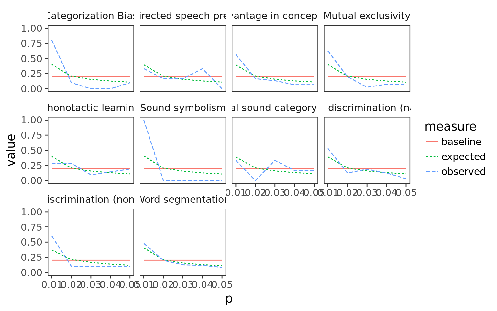

P-curves have been proposed as one (of many) ways to measure publication biases, because so-called p-hacking (conducting multiple statistical analyses, excluding data points, etc until a p-value below the significance threshold [typically .05] is reached) can lead to an inflation of high p-values that are nonetheless significant. The exected distribution of p-values in the absence of prevalent p-hacking of a null effect is biased towards smaller values. The present script is based on the p-curve app version 4.0.
One of the main problems with p-curve is the use of text mining to generate input, and the presence of heterogeneous tests (https://peerj.com/articles/1715/). In the case of MetaLab, however, all test statistics were entered by hand and concern a homogeneous research literature (within each dataset). Further, we only enter the main test statistic which would also be used to calculate effect sizes in our meta-analysis. Therefore, we believe that p-curve is an appropriate analysis for the dataset.
When reported or necessary to calculate effect sizes, we note the t-value or F-score for each record (a single study). We do not consider studies for which this information was unavailable in the following analyses.
To calculate p-values from \(t\)-values and \(F\)-scores, we also need the degrees of freedom. When one group of participants was tested, we use \(N-1\), for a two group comparison design we use \(N-2\). \(F\)-scores require two degrees of freedom, the first one however is always one in the main analysis of interest (we do not enter or consider e.g., interactions of the main effect of interest with covariates such as age, gender, etc.).
We need to source code from the p-curve app. This p-curve report is based on the p-curve app 4.0 (accessed 25.02.2015) via code from the app. We have heavily adapted this code, however.
source("pcurve.R")Compute p-curves for each dataset.
pc <- all_data %>%
group_by(dataset) %>%
select(study_ID, t, F, n_1, n_2, participant_design, d) %>%
filter(!is.na(t)|!is.na(F)) %>%
mutate(df2 = ifelse(participant_design == "between", (n_1 + n_2)-2, n_1-1),
value = ifelse(is.na(t), F, t**2), # turn ts into Fs by squaring them
test = ifelse(is.na(t), "F", "t"),
df1 = 1) %>% # In the source script, the authors always have 2 dfs, but
# df1 is always 1 (both for t and for F),
# we always look at the main result of ANOVAs
do(p_curve(.))Plot p-curves.
ggplot(pc, aes(x = p, y = value, col = measure, lty = measure)) +
geom_line() +
facet_wrap(~dataset)
It’s clear that things look pretty reasonable across datasets.